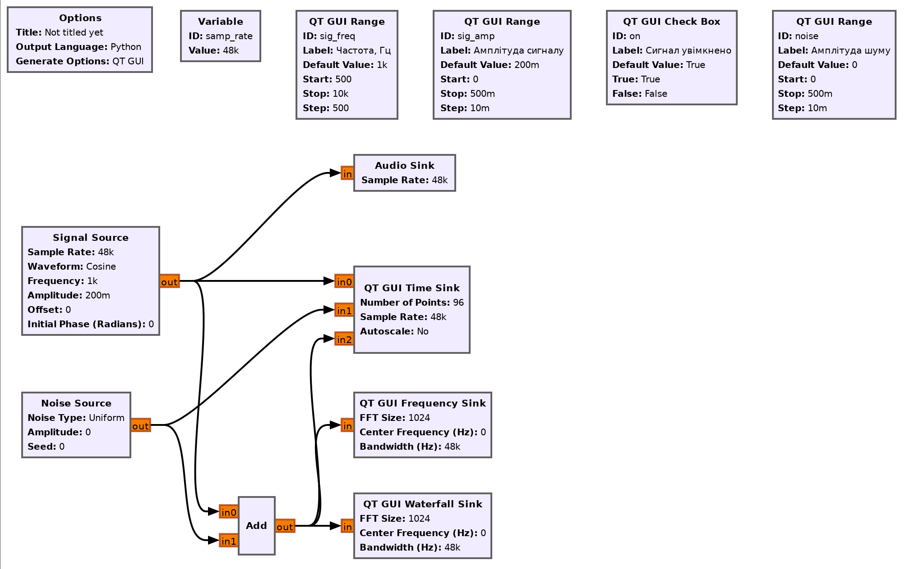
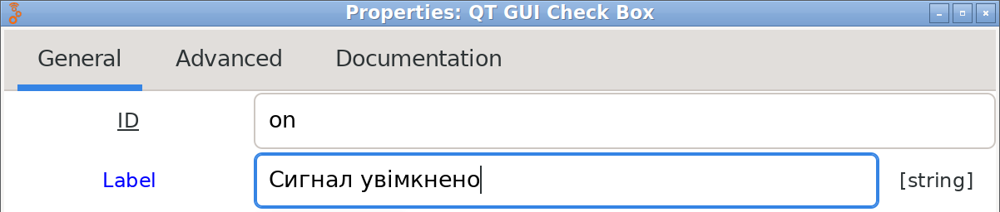
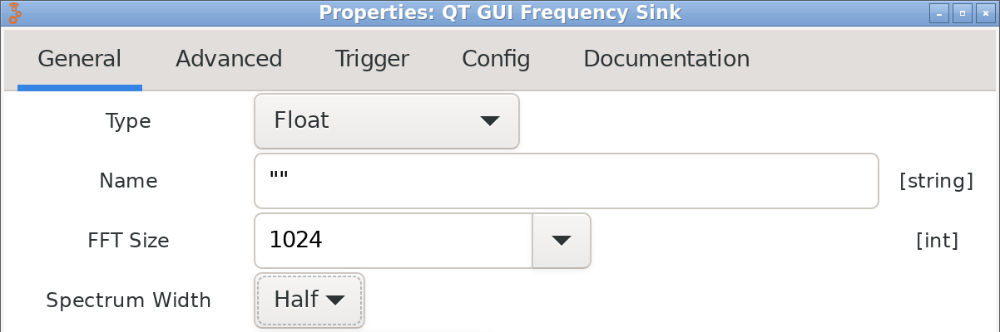
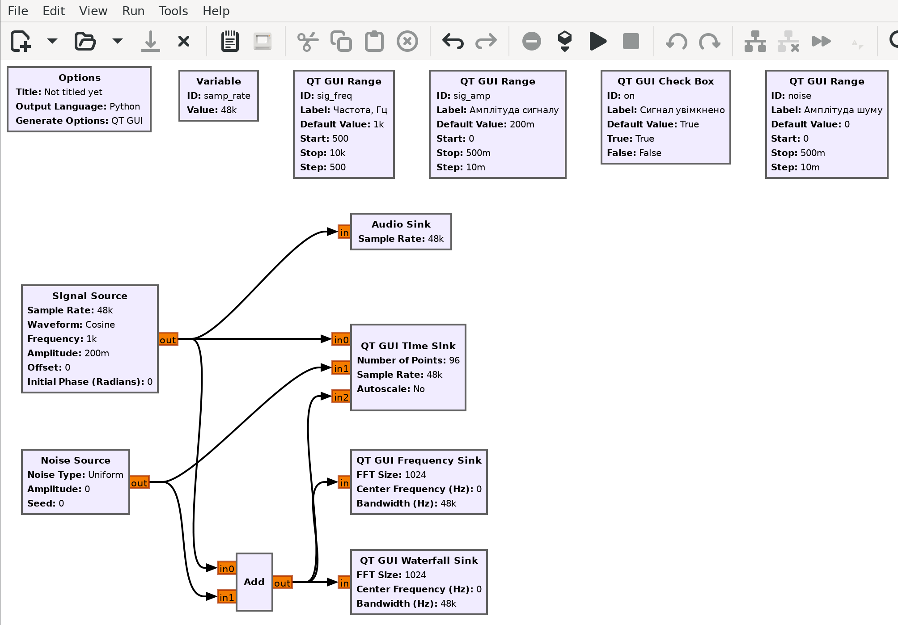
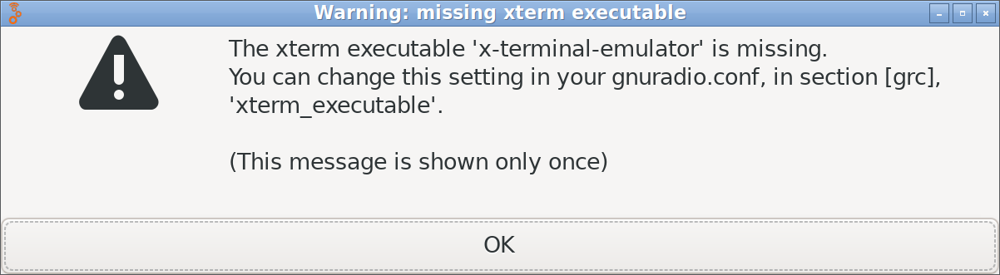
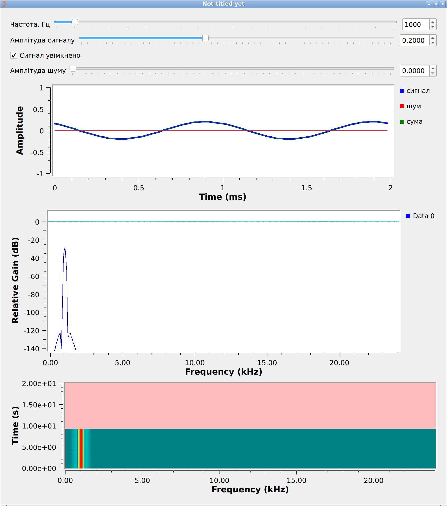

Тема 2. Радіосигнали та об’єкти розвідки
Тут зібрано все для практичної частини теми: вправа зі спектрограмами, відповіді до якої можна перевірити просто на цій сторінці, аркуш для друку, спектрограма до завдання 1, калькулятор до завдання 3, інструкція до завдання 4, розповідь про сигнали метеосупутників і відповіді.
Вправа № 1. Упізнайте сигнал
На рис. 2.7 показано ефір навчального району з 10:33:05 до 10:33:25: шість вікон, у кожному свій діапазон частот і один сигнал. Кожен сигнал записав приймач поблизу його джерела, а не пост П1. Час іде згори вниз. Працюйте в парі.

Портрети сигналів
| Джерело | Ширина смуги | У часі | За частотою |
|---|---|---|---|
| Радіостанція | до 25 кГц | передачі по кілька секунд | стоїть |
| Мобільні телефони | до 20 МГц | нерегулярні сплески | кожен на своїй ділянці |
| Пульт керування безпілотником | десятки МГц | короткі сплески | стрибає по всій смузі |
| Передавач відео з безпілотника | до десятків МГц | без пауз | стоїть |
| РЛС | близько 1 МГц | сплески через рівні проміжки | стоїть |
- Визначте частоту і ширину смуги кожного сигналу. Шириною вважайте всю смугу, в якій сигнал з’являється, а частотою її середину. Зважайте на одиниці.
- Опишіть поведінку кожного сигналу в часі та за частотою словами таблиці портретів.
- За таблицею портретів назвіть джерело кожного сигналу. Які два сигнали мають однаковий портрет? Якого джерела немає на карті рис. 1.4?
- Спектрограма поста П1 показує всі сигнали від 25 до 6000 МГц, які до нього доходять, хоч пост веде лише РР. За картою рис. 1.4 і чотирма умовами визначте, які сигнали вона покаже. Сигнал 1 належить радіомережі (Д1, Д2 і Д3), сигнал 4 належить РЛС 1 (див. задачу 2), сигнал 5 належить РЛС 2, яку вже ввімкнули. Джерела лишилися на місцях. Антени стоять на висоті 2 м (Д2 і Д3), 4 м (Д1) і 8 м (РЛС 2). Про який сигнал карта нічого не каже?
Карта до кроку 4

Це карта з теми 1: вона показує район о 09:00. Під час вправи джерела стоять на тих самих місцях, а РЛС 2 уже ввімкнено. Пунктирна межа на карті проходить за 21,8 км від поста П1: до неї пост чує передавач, антена якого на висоті 2 м. Передавач із вищою антеною він чує й далі. Координати позначок наведено на сторінці теми 1.
Перевірте себе
Для кожного сигналу оберіть відповіді й натисніть «Перевірити». Частоту сигналу з кроку 1 прочитайте на осі над його вікном: сторінка її не перевіряє. Кнопка «Показати пояснення» відкриває відповіді до всіх кроків.
Крок 3. Однаковий портрет мають сигнали 4 і 5: обидва належать РЛС. Розрізнити їх можна за частотою і за проміжком між сплесками. На карті рис. 1.4 немає джерела «Мобільні телефони».
Аркуш для друку
Аркуш до вправи № 1 і завдання 1 (файл PDF, три сторінки формату А4). На першій сторінці рис. 2.7, збільшений в 1,5 раза, і таблиця портретів. На другій текст вправи й таблиця для відповідей. На третій завдання 1: спектрограма радіомовного діапазону і рамка, в якій малюють спектр.
Спектрограма до завдання 1
На сторінці теми й на аркуші є спектрограма радіомовного діапазону. Замалюйте за нею спектр, як на рис. 2.4: позначте кожну станцію і ширину її смуги. Яка станція найсильніша? Де є вільне місце?

Це модель: станції на ній вигадано. І частоти станцій, кратні 0,1 МГц, і ширину смуги взято такими, як у справжньому радіомовленні Європи. Колір позначки показує рівень сигналу: що темніша позначка, то сильніший сигнал.
Як малювати спектр. Проведіть вісь частот із тими самими поділками, що й на спектрограмі. Над позначкою кожної станції намалюйте горб такої самої ширини. Що темніша позначка, то вищий горб. Частоту станції показує середина її позначки. На аркуші для друку для спектра є готова рамка.
Калькулятор до завдання 3
Потрібен комп’ютер або телефон. Калькулятор на сторінці теми обчислює за рівнянням Фрііса потужність сигналу роутера. Як вона зміниться, коли відстань зросте вдвічі? А вдесятеро? Перевірте розрахунок застосунком, що показує рівень Wi-Fi. Чому виміряне відрізняється від обчисленого?
Калькулятор рахує за рівнянням Фрііса з теми: P₂ = P₁ · (λ / (4πd))², де P₁ — потужність передавача, P₂ — потужність, яку приймає антена, λ — довжина хвилі, d — відстань між антенами. Довжину хвилі він обчислює сам, за правилом теми: 300 ділить на частоту в мегагерцах і отримує метри.
Що показує калькулятор. Потужність, яку приймає антена, дуже мала, тому калькулятор пише її з префіксом: 1 мВт (міліват) дорівнює тисячній частці вата, 1 мкВт (мікроват) мільйонній, 1 нВт (нановат) мільярдній, 1 пВт (піковат) трильйонній.
Поруч із потужністю калькулятор пише рівень сигналу в децибелах відносно мілівата (дБм): ця одиниця знадобиться, щоб порівняти розрахунок із застосунком для Wi-Fi. Рівень 0 дБм відповідає 1 мВт, а кожні 10 дБм униз означають удесятеро меншу потужність: −10 дБм відповідає 100 мкВт, −20 дБм відповідає 10,0 мкВт, −30 дБм відповідає 1,00 мкВт, −40 дБм відповідає 100 нВт. Проміжні значення дає формула: рівень у дБм дорівнює 10 · lg(P / 1 мВт), де P позначає потужність, а lg десятковий логарифм. Для початкових чисел калькулятора антена приймає 396 нВт, тобто 0,000396 мВт: 10 · lg(0,000396) = −34 дБм. Це між −40 дБм (100 нВт) і −30 дБм (1,00 мкВт).
Калькулятор працює, коли в браузері ввімкнено JavaScript.
| Відстань | Потужність, яку приймає антена | Рівень |
|---|
Таблиця показує результат для введеної відстані, а також удвічі й удесятеро далі.
Початкові числа описують домашній роутер. Потужність 100 мВт є найбільшою, яку в Європі дозволено випромінювати пристроям Wi-Fi на частотах від 2400 до 2483,5 МГц. Частоту 2400 МГц узято з теми. Відстань 5 м означає, що роутер стоїть у тій самій кімнаті.
Як перевірити розрахунок. Потрібен застосунок, який показує рівень сигналу Wi-Fi в дБм. Для телефона шукайте його в магазині застосунків за словами «Wi-Fi analyzer». На комп’ютері Mac застосунок не потрібен: натисніть значок Wi-Fi, утримуючи клавішу Option. На комп’ютері з Windows система показує рівень у відсотках, а не в дБм, тому зручніше взяти телефон. Рівень на екрані підписано «RSSI» або «Signal strength», а одиницю написано латинськими літерами: dBm. Станьте за кілька метрів від роутера так, щоб між вами не було стін. Введіть цю відстань у калькулятор і порівняйте обчислений рівень із тим, який показує застосунок. Якщо застосунок показує і частоту мережі, введіть її теж.
Інструкція до завдання 4: власний сигнал у GNU Radio
Потрібен комп’ютер із програмою GNU Radio. GNU Radio — це безкоштовна програма, у якій радіопристрої складають із готових блоків. За інструкцією на сторінці теми складіть схему, що створює сигнал однієї частоти й показує його спектр і спектрограму. Змінюйте частоту: що відбувається на спектрі, а що на спектрограмі? Вмикайте й вимикайте сигнал, як телеграфіст передає крапки й тире азбуки Морзе. Опишіть портрет такої передачі словами таблиці портретів. Що розвідка дізнається з нього, не читаючи повідомлення?
Схема складається із шести блоків. Один блок створює сигнал, повзунок задає його частоту, а прапорець вмикає й вимикає сигнал. Два блоки показують спектр і спектрограму сигналу, ще один відтворює сигнал як звук. На рисунку нижче є ще два блоки, Options і Variable: їх програма ставить у кожну схему сама, і вони зберігають налаштування самої схеми. Під назвою кожного блока програма пише його параметри: потрібні з них названо в кроках нижче.

| Блок | Що робить |
|---|---|
| QT GUI Range | повзунок, яким змінюють частоту сигналу |
| QT GUI Check Box | прапорець, що вмикає й вимикає сигнал |
| Signal Source | створює сигнал однієї частоти |
| QT GUI Frequency Sink | показує спектр сигналу |
| QT GUI Waterfall Sink | показує спектрограму сигналу |
| Audio Sink | відтворює сигнал як звук через динамік |
Сигнал має звукову частоту, щоб його можна було почути. Радіопередавачі працюють на значно вищих частотах, але спектр і спектрограма показують їхні сигнали так само.
Інструкцію до завдання 4 перевірено в GNU Radio версії 3.10.12 у системі Linux: рисунки показують вікна цієї версії. У Windows і macOS інструкцію не перевірено: вікна там можуть виглядати трохи інакше. Якщо крок не збігається з тим, що ви бачите на екрані, знайдіть назву з цього кроку в меню програми.
Як встановити програму
GNU Radio входить до набору програм radioconda. Інсталятори цього набору лежать на сторінці radioconda-installer. Для встановлення потрібно близько 5 гігабайтів вільного місця на диску. Програма, у якій складають схеми, називається GNU Radio Companion.
Термінал — це програма, у якій команди вводять текстом: після кожної команди натискають клавішу Enter. У macOS термінал лежить у теці «Програми», у вкладеній теці «Утиліти». У Linux термінал є в меню програм.
- Windows. Завантажте файл, назва якого закінчується на
Windows-x86_64.exe, і двічі клацніть його. Після встановлення відкрийте в меню «Пуск» теку radioconda і запустіть GNU Radio Companion. Якщо в цій теці немає GNU Radio Companion, запустіть із неї radioconda Prompt: це термінал набору radioconda. У цьому терміналі введіть командуgnuradio-companion. - macOS. Завантажте файл
MacOSX-arm64.pkg(процесор Apple) абоMacOSX-x86_64.pkg(процесор Intel) і двічі клацніть завантажений файл. Який процесор має ваш Mac, показує меню Apple, пункт «Про цей комп’ютер»: у рядку «Чип» названо процесор Apple, у рядку «Процесор» процесор Intel. Після встановлення введіть у терміналі дві команди:conda activate base, а потімgnuradio-companion. - Linux. Завантажте файл, назва якого закінчується на
Linux-x86_64.sh. Відкрийте термінал і перейдіть у теку з цим файлом: введітьcd, пробіл і назву теки, наприкладcd Downloads. Потім введітьbash radioі натисніть клавішу Tab: термінал сам допише назву файлу. Натисніть Enter. Інсталятор ставить запитання англійською. Спершу натисніть Enter і гортайте текст ліцензії пробілом. На запитання про ліцензію введітьyes, на два наступні натисніть Enter. Потім закрийте термінал, відкрийте його знову і введіть дві команди:conda activate base, а потімgnuradio-companion.
Як скласти схему
Меню, блоки й параметри програма називає англійською: тут їх записано так, як на екрані. Кожну дію можна вибрати в меню або викликати клавішею, яку вказано в дужках. На комп’ютері Mac замість клавіші Ctrl натискають клавішу Command.
Відкрийте порожню схему. Після запуску програма показує порожню схему. Якщо відкрито іншу схему, створіть нову: меню File, пункт New (клавіші Ctrl+N). У порожній схемі вже стоять два блоки: Options і Variable.
Угорі вікна стоять меню і ряд кнопок. Білий аркуш посередині призначений для схеми. Праворуч стоїть перелік блоків програми. Унизу ліворуч програма пише свої повідомлення. Таблиця праворуч від повідомлень повторює блок Variable: ID samp_rate і значення 32000. Для завдання ця таблиця не потрібна.

Вікно GNU Radio Companion з порожньою схемою Відкрити рисунок окремо Налаштуйте блок Variable. У комп’ютері сигнал записано як ряд чисел: кожне число показує значення сигналу в одну мить. Таке число називають відліком. Двічі клацніть блок Variable. Відкриється вікно «Properties: Variable». У полі Value замініть 32000 на
48000: стільки відліків за секунду матиме сигнал. Із такою швидкістю відтворюють звук звукові карти комп’ютерів. Натисніть кнопку OK.Блок Variable зберігає це число під іменем
samp_rate, і решта блоків бере число за цим іменем. На самому блоці програма пише число коротко: 48k.
Параметри блока Variable Відкрити рисунок окремо Програма підкреслює назви параметрів, значення яких можна змінювати під час роботи схеми. Синьою назва стає, поки ви змінюєте значення параметра.
Додайте шість блоків. Відкрийте пошук блоків: меню View, пункт Find Blocks (клавіші Ctrl+F). Над переліком блоків з’явиться поле пошуку. Введіть у це поле назву блока й натисніть Enter: блок з’явиться на аркуші схеми.

Пошук блока за назвою Відкрити рисунок окремо Так додайте всі шість блоків: QT GUI Range, QT GUI Check Box, Signal Source, QT GUI Frequency Sink, QT GUI Waterfall Sink, Audio Sink. Після кожного натискання Enter перевірте назву блока, що з’явився. Зайвий блок клацніть і вилучіть: меню Edit, пункт Delete (клавіша Delete).
Новий блок з’являється десь посередині аркуша. Перетягніть блок мишею на вільне місце, щоб блоки стояли, як на рисунку нижче.

Шість блоків додано: чотири назви червоні, кнопка ▶ сіра Відкрити рисунок окремо Назви чотирьох блоків червоні. Так програма позначає блок, який ще не готовий до роботи: йому бракує значення параметра або з’єднання з іншим блоком. Повзунок і прапорець з іншими блоками не з’єднують, тому їхні назви чорні. Поки на схемі є червона назва, кнопка ▶ сіра і схему запустити не можна.
Число 48k у написах Sample Rate і Bandwidth (Hz) нові блоки беруть із блока Variable. Напис Bandwidth (Hz) тут не означає ширини смуги сигналу: у цьому написі блок показує число відліків за секунду.
Задайте параметри блоків. Двічі клацніть блок: відкриється вікно параметрів цього блока. Значення параметра впишіть у поле праворуч від назви параметра. Деякі параметри замість поля мають список значень. Клацніть цей список і оберіть у ньому потрібне значення. Праворуч від поля стоїть підказка у квадратних дужках: вона каже, що має бути в полі. Підказка [string] означає текст, [int] ціле число, [float] і [real] будь-яке число. Змінюйте лише параметри, названі нижче: решту залиште, як є. Вікно закриває кнопка OK. Рисунки показують верхню частину кожного вікна.
QT GUI Range. ID:
freq. Label:Частота, Гц. Default Value:1000. Start:500. Stop:10000. Step:100. Параметр Type залиште, як є. ID є іменем, під яким схема зберігає значення повзунка. Label є підписом біля повзунка: якщо програма не приймає українських літер, впишіть підпис латинськими. Повзунок рухатиметься від 500 до 10 000 Гц кроками по 100 Гц, а на початку стоятиме на 1000 Гц.
Параметри блока QT GUI Range Відкрити рисунок окремо QT GUI Check Box. ID:
on. Label:Сигнал увімкнено. Під іменемonсхема зберігає стан прапорця. Позначений прапорець у розрахунках дорівнює одиниці, порожній нулю.
Параметри блока QT GUI Check Box Відкрити рисунок окремо Signal Source. Output Type:
float. Frequency:freq. Amplitude:0.2*on. Параметри Sample Rate і Waveform залиште, як є: у полі Sample Rate стоїть ім’яsamp_rateз кроку 2, а значення Cosine задає плавне коливання однієї частоти. Значення float означає звичайні числа: такі відліки приймає блок Audio Sink. Значення complex, яке спершу стоїть у параметрі Output Type, означає числа іншого виду: у цьому завданні вони не потрібні. У полі Frequency стоїть ім’я повзунка, тому частоту сигналу задає повзунок. Запис0.2*onозначає: 0,2 помножити на стан прапорця. Із позначеним прапорцем амплітуда сигналу дорівнює 0,2, а з порожнім нулю: сигнал вимкнено. Найгучнішому звукові відповідає амплітуда 1, тому з амплітудою 0,2 тон звучить помірно. На блоці програма пише амплітуду як 200m: літера m означає тисячні, а 200 тисячних дорівнює 0,2.
Параметри блока Signal Source Відкрити рисунок окремо QT GUI Frequency Sink. Type:
Float. Spectrum Width:Half. Спершу оберіть Type: лише після цього у вікні з’явиться параметр Spectrum Width. Значення Float означає ті самі звичайні числа. Зі значенням Half вісь частот починається з нуля. Параметри Name і FFT Size залиште, як є: Name задає заголовок графіка, а FFT Size число відліків, з яких блок обчислює один спектр. Дві лапки в полі Name означають порожній заголовок.
Параметри блока QT GUI Frequency Sink Відкрити рисунок окремо QT GUI Waterfall Sink. Type:
Float. Spectrum Width:Half. Це ті самі два параметри, що й у блока QT GUI Frequency Sink.Audio Sink. Параметрів не змінюйте.
З’єднайте блоки. Вихід блока стоїть на його правому краї й підписаний out. Вхід стоїть на лівому краї й підписаний in. Клацніть вихід блока Signal Source, а потім вхід блока QT GUI Frequency Sink: між ними з’явиться лінія зі стрілкою. Так само з’єднайте цей вихід зі входами блоків QT GUI Waterfall Sink і Audio Sink. Від одного виходу підуть три лінії.
Колір виходу і входу показує вид чисел: помаранчевий означає float, синій complex. Вихід і вхід, які ви з’єднуєте, мають бути одного кольору. У цій схемі всі виходи і входи помаранчеві. Якщо вхід блока синій, оберіть у параметрі Type цього блока значення Float. Якщо синій вихід блока Signal Source, оберіть у параметрі Output Type цього блока значення float. Коли всі блоки налаштовано і з’єднано, їхні назви стають чорними, а кнопка ▶ теж чорною.

Готова схема: назви блоків чорні, кнопка ▶ чорна Відкрити рисунок окремо Збережіть схему: меню File, пункт Save (клавіші Ctrl+S). Програма відкриє вікно «Save a Flow Graph to a File...» і запропонує назву
untitled.grc, у якій виділено слово untitled. Введіть замість цього слова syhnal і натисніть Enter: схема збережеться у файліsyhnal.grc. Якщо ви стерли всю назву, введіть її повністю:syhnal.grc.Запустіть схему. Спершу зробіть звук комп’ютера тихішим. Запустіть схему: меню Run, пункт Execute (клавіша F6 або кнопка ▶). Під час першого запуску програма може показати вікно «Warning: missing xterm executable». Це вікно повідомляє англійською, що програма не знайшла на комп’ютері термінала. Цій схемі термінал не потрібен: натисніть OK. Таке вікно з’являється лише раз.

Попередження під час першого запуску Відкрити рисунок окремо Відкриється вікно «Not titled yet», і зазвучить рівний тон. Щоб зупинити схему, виберіть меню Run, пункт Kill (клавіша F7 або кнопка ■).

Вікно запущеної схеми: прапорець, повзунок, спектрограма і спектр Відкрити рисунок окремо Угорі вікна стоять прапорець і повзунок, під ними спектрограма, а внизу спектр. Поле праворуч від повзунка показує частоту повзунка числом.
Спектр показує сигнал у цю мить. На осі Frequency (kHz) стоїть частота в кілогерцах: пік піднімається на частоті 1 кГц, яку задає повзунок. Пік має схили, бо програма обчислює спектр із короткого відрізка сигналу: на такому спектрі навіть одна частота дає не тонку лінію, а вузький пік. З тієї самої причини внизу обабіч піка видно два малі горбики.
Вертикальна вісь Relative Gain (dB) показує рівень сигналу в децибелах: що вище точка кривої, то сильніший сигнал на цій частоті. На відміну від дБм, ці децибели не прив’язані до мілівата: програма не знає справжньої потужності сигналу, тому відлічує рівень від власного умовного нуля. Праворуч програма підписує криву: Data 0. Тонку лінію на рівні 0 програма малює сама: для завдання ця лінія не потрібна.
Спектрограма складається з рядків: кожен рядок є спектром в одну мить. Колір показує рівень сигналу. Темно-бірюзове тло означає, що сигналу на цій частоті немає. Слабкий сигнал має світліший бірюзовий колір, сильніший жовтий, найсильніший червоний. Тому тон малює смугу з червоною серединою і світлішими краями: середина відповідає вершині піка, краї його схилам.
Новий рядок з’являється внизу, а старі піднімаються вгору. Тому тон однієї частоти малює вертикальну смугу. Вісь Time (s) показує, скільки приблизно секунд тому з’явився рядок. Програма пише числа цієї осі у вигляді 2.00e+01: це 2,00 · 101, тобто 20 секунд. Рожеву частину вгорі програма ще не заповнила рядками.
Обидві осі частот закінчуються на 24 кГц. Щоб записати одне коливання, потрібно щонайменше два відліки. Тому сигнал із 48 000 відліків за секунду містить частоти до 48 000 / 2 = 24 000 Гц, тобто до 24 кГц.
Проведіть два досліди. Перший: повільно тягніть повзунок і стежте за спектром і спектрограмою. Запишіть, що відбувається на спектрі, а що на спектрограмі.
Другий: клацайте прапорець, щоб вмикати сигнал на короткий або довший час. Азбука Морзе записує кожну літеру короткими й довгими сигналами: крапками й тире. Тире триває як три крапки. Спробуйте передати дві літери. Літера Р: крапка, тире, крапка. Літера Е: крапка. Між літерами робіть довшу паузу. Подивіться, який слід залишає передача на спектрограмі.


Після дослідів дайте відповіді на запитання завдання. Таблиця портретів стоїть на цій сторінці вище, у частині «Вправа № 1».
Якщо ваша схема не запускається, порівняйте її з готовою: syhnal-hotova.grc. Завантажте цей файл і збережіть у теці, яку легко знайти. Потім відкрийте файл у програмі: меню File, пункт Open (клавіші Ctrl+O).
Сигнали метеосупутників
Чотири умови перехоплення діють для кожного приймача, не лише для приймача розвідки. Ось приклад із мирного життя.
Метеосупутники NOAA-15, NOAA-18 і NOAA-19 названо за англійським скороченням назви Національного управління океанічних і атмосферних досліджень США (NOAA), якому вони належали. Вони облітали Землю над полюсами, знімали її й безперервно передавали знімки радіосигналом.
Кожен супутник передавав на своїй частоті між 137 і 138 МГц: NOAA-15 на 137,62 МГц, NOAA-18 на 137,9125 МГц, NOAA-19 на 137,1 МГц.
Передавач супутника працював увесь час. Проте прийняти його сигнал можна було лише тоді, коли супутник піднімався над горизонтом приймача: за один проліт щонайбільше близько 14 хвилин.
Передачу задумали так, щоб її могла приймати порівняно недорога наземна станція. Знімки приймали в себе вдома й аматори, для яких радіо було захопленням.
У цій історії видно всі чотири умови з теми. Умова частоти: приймач мав працювати на частоті супутника. Умова часу: слухати треба було саме під час прольоту. Умова потужності: коли супутник заходив за горизонт, його сигнал до приймача не доходив, як і сигнал наземного передавача з-за радіогоризонту. Четверта умова, напрямок, виконувалася сама: супутник передавав знімки саме для наземних станцій.
У 2025 році всі три супутники вивели з експлуатації.
Розвідка діє так само, як ті, хто приймав знімки: налаштовує приймач на потрібну частоту і слухає тоді, коли передавач в ефірі й не за горизонтом. Різниця в тому, що противник призначає свої сигнали не для розвідки.
Відповіді
Відповіді до вправи, контрольних запитань, задач і завдань теми. Спершу виконайте вправу самі.
Публікації, з яких узято дані сторінки
- POES Operational Status. Сторінка Національного управління океанічних і атмосферних досліджень США, англійською мовою, оновлена 19 серпня 2025 р. Словом POES у назві управління скорочено називає свої метеосупутники. Сторінка наводить частоти передавачів супутників NOAA-15, NOAA-18 і NOAA-19 та дні, коли їх вивели з експлуатації.
- Educator’s guide for building and operating environmental satellite receiving stations. Посібник того самого управління для вчителів, виданий 1989 р. і передрукований 1991 р., англійською мовою. Пояснює, як метеосупутники передавали знімки і як їх приймала наземна станція.
- ERC Recommendation 70-03. Рекомендація європейського об’єднання адміністрацій зв’язку CEPT, редакція від червня 2019 р., файл PDF англійською мовою. У додатку 3 наведено найбільшу потужність, яку дозволено випромінювати пристроям Wi-Fi.
- Spectrum Monitoring. Довідник Міжнародного союзу електрозв’язку про спостереження за радіочастотним спектром, видання 2011 р., англійською мовою. З нього взято правило, за яким частоти радіомовних станцій у Європі кратні 0,1 МГц, і ширину смуги однієї станції для спектрограми до завдання 1.
- GNU Radio. Репозиторій програми GNU Radio на сайті GitHub, англійською мовою. З файлів програми взято назви блоків схеми, назви їхніх параметрів і клавіші, якими схему зберігають, запускають і зупиняють.
- radioconda-installer. Сторінка проєкту radioconda на сайті GitHub, англійською мовою. З неї завантажують інсталятори набору програм, до якого входить GNU Radio.